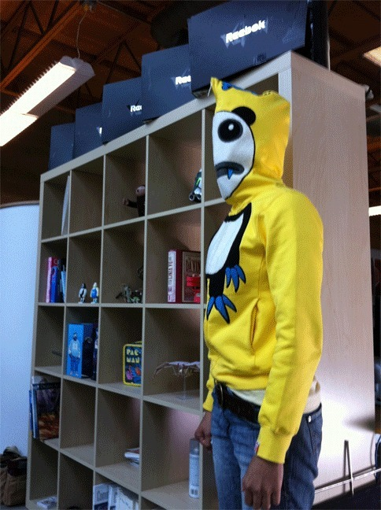

Sat, 16 Oct 2010 06:22:00 · Trigger · Adobe · Games · FIlm · Hero
My hero shots for Adobe interview @TriggerLLC
~ The Adobe team came to Trigger office to make a documentary video on one of our games project, and here’s one of the hero shots that’s going to be in it…
